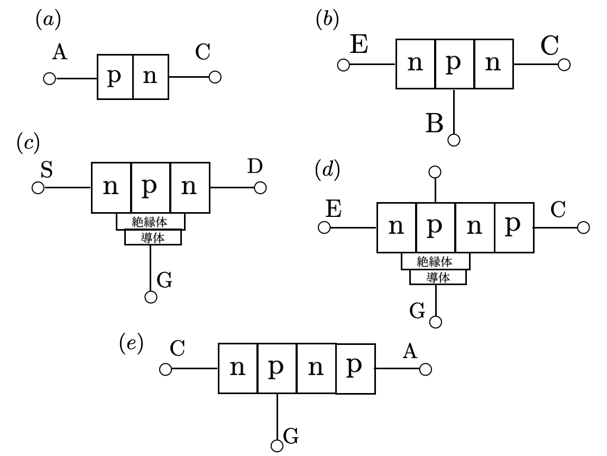
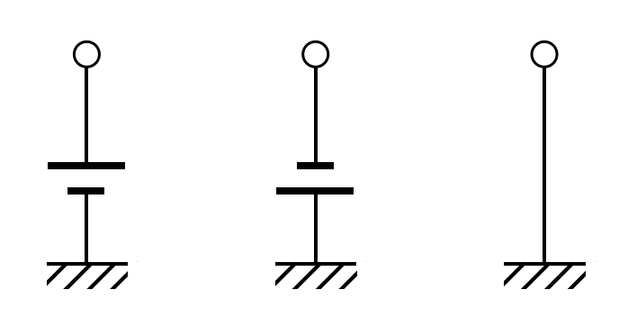
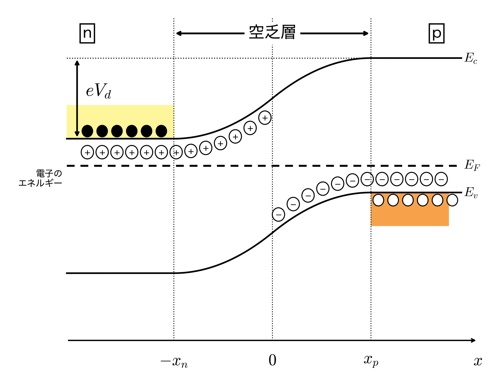
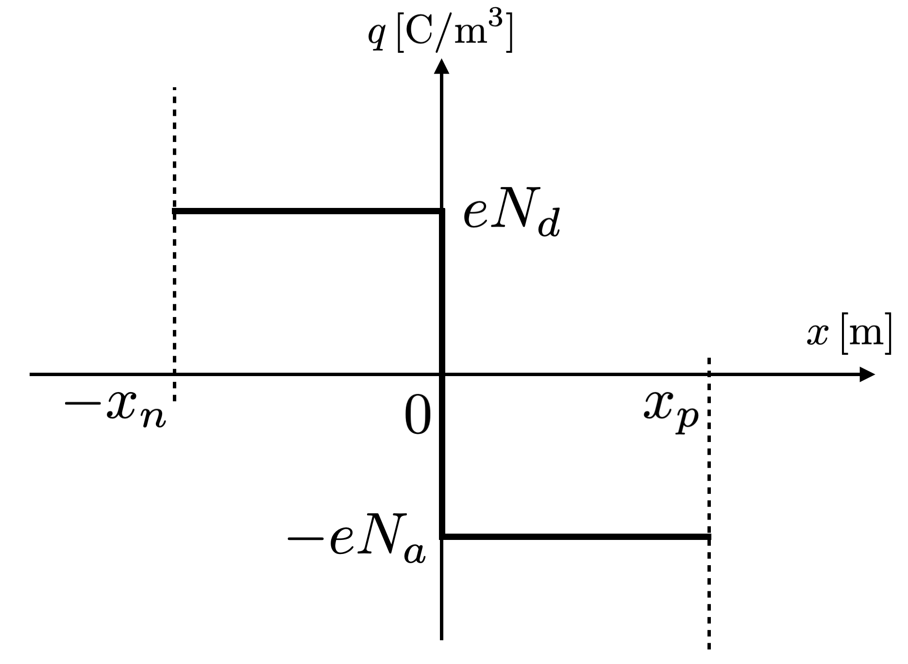

- 解答用紙は各自で準備すること。コピー用紙でも構いません。
- 解答用紙の左上に第何回目の授業の演習問題かを記入し、右上には自分の学生番号と名前を記入する。
- 解答用紙を写真で撮って、Google Classroom の演習問題の該当先に提出する。
この演習問題は、下記の理解度を確認することを目的としています。
問題1：スイッチの構造と特徴
- パワーエレクトロニクスで使用される主要な半導体スイッチ素子（ダイオード、トランジスタ類）を識別できているか。
- 各スイッチング素子の回路記号を正しく描けるか。
- 半導体のエネルギーバンド図を用いてオン状態を説明できるか。
- pn接合における各端子のバイアス条件（順方向・逆方向）を正しく示せるか。
- 各素子のオン・オフ制御方法の違いを説明できるか。
- 各スイッチング素子の特徴（長所・短所・用途）を調べてまとめることができるか。
問題2：空乏層の解析
- ポアソン方程式から、空乏層内の電場と電荷密度の関係を範囲ごとに式で書けるか。
- 微分方程式を積分し、境界条件と連続条件を使って電場の分布を求め、グラフに描けるか。
- 電場を積分すると電位差になることを使って、空乏層幅をドーピング濃度と電圧で表せるか。
- 逆電圧をかけたときに空乏層にかかる電圧を考え、最大電場と空乏層幅を結びつけられるか。
問題3：ワイドギャップ半導体
- 問題２で導いた最大電場と空乏層幅の関係を使えるか。
- 絶縁破壊電界強度とパワー半導体性能の関係を理解しているか。
- ワイドギャップ半導体（GaN）の絶縁破壊電界強度を用いて、かけられる電圧の比を計算できるか。
- 決まった耐圧に対して、空乏層幅とドーピング濃度を数値で求められるか。
- 抵抗率と層の厚さからオン抵抗を求め、SiとGaNで比べられるか。
- 耐圧と損失のトレードオフが、ワイドギャップ半導体でなぜ緩むかを説明できるか。
問題4：オン時の損失の比較
- 問題1で描いたオン時のエネルギーバンドから、電流の通り道にpn接合の障壁があるかを読み取れるか。
- IGBTのオン電圧に、電流によらない電圧が加わる理由をpn接合の障壁で説明できるか。
- 導通損失 P = VI から、MOSFETとIGBTの損失を計算し、損失の大小が入れ替わる電流を求められるか。
- IGBTのオン抵抗が小さくなる理由を、正孔の注入（伝導度変調）で説明できるか。
問題１：スイッチの構造と特徴
下記の図(a)から(e)は、パワーエレクトロニクスで用いられる半導体スイッチである。それぞれについて下記の項目をまとめよ。
- 名称・回路記号
- オン時（電流が流れている時）のエネルギーバンドと各端子のバイアス
- オン・オフの制御方法
- 特徴（ネットや教科書で調べる）

(2)の各端子のバイアスは、下記の回路素子を接続すること。

エネルギーバンドとバイアスの書き方は講義スライドを参考にすること。
問題２：空乏層の解析

図に示す空乏層の解析を行う。目標は、熱平衡状態で空乏層にかかる電圧（拡散電位）$V_{d}$から、空乏層内の電場$F_{x}(x)$と空乏層幅$(x_{n}+x_{p})$を求めることである。空乏層の解析には下記のポアソン方程式を用いる。
ここで、$\phi$は電位、$q$は電荷密度、$\varepsilon$は誘電率を表す。さらに、電場${\boldsymbol F}$と電位$\phi$の関係は下記の式で表される。
今回は、p型半導体とn型半導体が$x=0$で接触し、その後、平衡状態になった時の空乏層について考える。$yz$方向は一様に分布し、$x$方向で変化しているとする。よって、上の二つの方程式の$y$方向と$z$方向の微分は$0$となり、用いる式は下記の通りに簡略化できる。
この2式より、電位を消去すると、電場と電荷密度の関係式を得ることができる。
この式を用いて、空乏層内の電場分布$F_{x}(x)$を導出する。空乏層内の電荷密度の分布は、ドナーイオンとアクセプタイオンの濃度によって変化する。空乏層内では、下記のグラフのように階段状に電荷密度が分布しているとする。

ここで、$e$は電気素量、$N_{d}$、$N_{a}$はそれぞれドナー濃度とアクセプタ濃度を表す。電荷密度$q(x)$と電気素量$e$は別の量であることに注意すること。
以上の内容をもとに空乏層内の電場の分布と空乏層幅を求める。
問題2-1：空乏層内で満たす微分方程式
下記の(i)と(ii)の範囲の場合で空乏層内の電荷分布$q(x)$が階段状に変化する。それぞれの場合における式(1)を求めよ。
問題2-2：空乏層内の電場の空間分布
- 問題2-1で求めた電場と電荷密度の微分方程式を不定積分することで、問題2-1の(i)と(ii)の範囲における電場$F_{x}^{\rm (i)}(x),F_{x}^{\rm (ii)}(x)$を導出せよ（答えに積分定数を含める）。
-
次に、境界条件を用いて積分定数を求める。空乏層の境界$(x=-x_{n}, x=x_{p})$において、電位の変化が$0$になる。つまり、境界では電場は$0$になり、下記の関係が成り立つ。
$$\begin{gathered}F_{x}^{\rm (i)}(-x_{n})=0,\\F_{x}^{\rm (ii)}(x_{p})=0\end{gathered}$$この条件を用いて、不定積分で求めた積分定数を求めて、電場の式を書き換えよ。また、$-x_{n}\leq x \leq x_{p}$における電場の分布をグラフで表せ。
-
さらに、$x=0$において、電場は連続しているため、(i)と(ii)の範囲で求めた電場は$x=0$において等しくなる。つまり、下記の条件が成り立つ。
$$F_{x}^{\rm (i)}(0)=F_{x}^{\rm (ii)}(0)$$この条件から、$x_{n},x_{p},N_{d},N_{a}$が満たす関係を求めよ。
問題2-3：空乏層幅
-
空乏層間に電位差$V_{d}\,{\rm [V]}$がかかっている。エネルギーバンド図では、電子のエネルギーを表しているため、エネルギーバンド図の低い方が電位が高い方になる。よって、
$$\phi(-x_{n})-\phi(x_{p})=V_{d}$$となる。また、下記の式から、電場を積分すると電位差になる。
$$V_{d}=\int_{-x_{n}}^{x_{p}}F_{x}(x)\,dx$$この関係を用いて、n型半導体の空乏層幅$x_{n}$を$e,\varepsilon,N_{d},N_{a},V_{d}$を用いて表せ。
- 同様に、p型半導体の空乏層幅$x_{p}$を$e,\varepsilon,N_{d},N_{a},V_{d}$を用いて表せ。
- 求めたい空乏層幅は$d=x_{n}+x_{p}$である。空乏層幅$d$を$e,\varepsilon,N_{d},N_{a},V_{d}$を用いて表せ。
問題2-4：最大電場と空乏層幅
ここまでは熱平衡状態（電圧をかけていない状態）を考えた。素子に逆電圧をかけると、空乏層にかかる電圧は、拡散電位$V_{d}$に逆電圧を足した$V$になり、問題2-2、2-3の式は$V_{d}$を$V$に置き換えればそのまま成り立つ。以下では、空乏層にかかる電圧を$V$とする。
空乏層内の電場が最大になる位置を答え、その最大値$F_{\rm max}$を$e,\varepsilon,N_{d},N_{a},V$を用いて表せ。さらに、$F_{\rm max}$と空乏層幅$d$の間に、下記の関係が成り立つことを示せ。
問題３：ワイドギャップ半導体
講義でワイドギャップ半導体について学んだ。ワイドギャップ半導体はSiCやGaNを指し、絶縁破壊電界強度が高い特徴がある。それによるパワー半導体への利点について考察する。問題２で、空乏層にかかる電圧$V$と空乏層幅$d$を用いて、空乏層内の最大電場が$F_{\rm max}=2V/d$となることを導出した。$F_{\rm max}$が材料で決まる絶縁破壊電界強度を超えると、素子は壊れてしまう。
ここで、$V$は空乏層にかかる電圧である。素子に大きな逆電圧をかけるときは拡散電位$V_{d}$は小さいので、$V$を半導体素子にかけられる電圧とみなす。
Siの絶縁破壊電界強度を$0.3\, {\rm [MV/cm]}$、GaNの絶縁破壊電界強度を$3.3\, {\rm [MV/cm]}$とする。このとき、問題２の結果を用いて、下記の問いに答えよ。数値は、この問題で与えた値を使って計算し、有効数字2桁で答えること。
- 同じ空乏層幅$d$で、GaNにはSiの何倍の電圧$V$をかけられるか求めよ。
- $300\,{\rm [V]}$に耐える素子を設計する。$N_{a}=N_{d}=N$とし、$F_{\rm max}$が絶縁破壊電界強度にちょうど等しくなるようにする。SiとGaNのそれぞれについて、空乏層幅$d\,{\rm [\mu m]}$とドーピング濃度$N\,{\rm [cm^{-3}]}$を求めよ。比誘電率はSiが$11.8$、GaNが$9.5$とし（講義スライドの表）、$\varepsilon_{0}=8.85\times10^{-12}\,{\rm [F/m]}$、$e=1.60\times10^{-19}\,{\rm [C]}$とする。
- オン時、電流は(2)の厚さ$d$、濃度$N$のn型の層を流れるとし、その層の抵抗$R=\rho d/S$をオン抵抗とみなす。ここで、抵抗率は$\rho=1/(eN\mu_{n})$、断面積は$S=1\,{\rm [cm^{2}]}$とする。電子移動度$\mu_{n}$はSiが$1400\,{\rm [cm^{2}/(V\cdot s)]}$、GaNが$900\,{\rm [cm^{2}/(V\cdot s)]}$とする。SiとGaNの$R\,{\rm [\Omega]}$を求め、GaNの$R$はSiの何分の1か答えよ。
- (3)の結果を、講義の「耐圧と損失のトレードオフ」（オフ時は濃度を小さく、オン時は濃度を大きくしたい）と結びつけて説明せよ。また、GaNの移動度はSiより小さいのに、なぜオン抵抗は小さくなるのか説明せよ。
問題４：オン時の損失の比較
問題１(2)で描いた、(c) MOSFETと(d) IGBTのオン時のエネルギーバンド（電流の通り道に沿ったもの。MOSFETはSからD、IGBTはEからCへ向かう方向）を使って、2つの素子のオン時の損失を比べる。
オン時に素子で消費される電力を導通損失という。素子にかかる電圧を$V$、流れる電流を$I$とすると、導通損失は下記の式で表される。
オン時の電圧は、MOSFETとIGBTでそれぞれ下記のように表せるとする。
MOSFETの導通損失は$P=V_{\rm DS}I=I^{2}R_{\rm on}$となる。
- 問題１(2)で描いた(c)と(d)のエネルギーバンドを見比べて、電流の通り道にpn接合の障壁があるのはどちらの素子か答えよ。また、そのことを使って、MOSFETのオン時の電圧はチャネル（反転層）とn層の抵抗だけで$R_{\rm on}I$と表せるのに対し、IGBTのオン時の電圧には、電流によらない電圧$V_{0}$が加わる理由を説明せよ。
- $600\,{\rm [V]}$用のMOSFETとIGBTがあり、MOSFETは$R_{\rm on}=60\,{\rm [m\Omega]}$、IGBTは$V_{0}=0.9\,{\rm [V]}$、$r_{\rm on}=15\,{\rm [m\Omega]}$とする。電流$10\,{\rm [A]}$と$40\,{\rm [A]}$を流したときの、それぞれの素子の導通損失を求めよ。また、2つの素子の導通損失が等しくなる電流を求め、それより小さい電流と大きい電流では、どちらの素子の損失が小さいか答えよ。
- (2)では、IGBTの$r_{\rm on}$（$15\,{\rm [m\Omega]}$）が、同じ$600\,{\rm [V]}$用のMOSFETの$R_{\rm on}$（$60\,{\rm [m\Omega]}$）より小さい。この理由を、問題１(2)で描いた(d)のエネルギーバンド（コレクタ側のp層から、n層へ正孔が入っていく様子）を使って説明せよ。問題３(3)で使った抵抗率の式$\rho=1/(eN\mu_{n})$では、$N$はn層のキャリア（電子）の濃度だったことを思い出すこと。